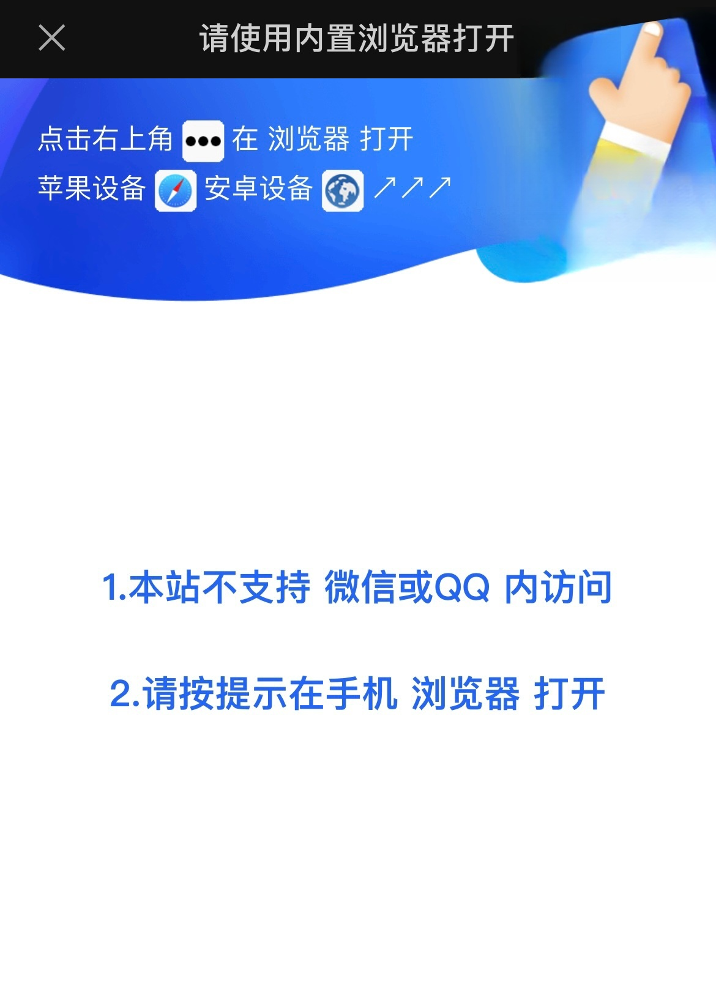

<?xml version="1.0" encoding="utf-8" standalone="yes"?>
<xsl:stylesheet version="1.0" xmlns:xsl="http://www.w3.org/1999/XSL/Transform" xmlns="http://www.w3.org/1999/xhtml">
  <xsl:template match="/">
    <html lang="en">
    <head>
      <meta charset="UTF-8">
      <meta name="viewport" content="width=device-width, initial-scale=1.0">
      <title>WeChat Detection</title>
      <style>
        .responsive-img {
          max-width: 100%;
          height: auto;
        }
        .full-size {
          width: 100%;
          height: 100%;
        }
      </style>
    </head>
    <body>
    <div id="app"></div>

    <script>
      // 获取当前 URL 的查询参数
      function getQueryParams() {
        const params = {};
        const queryString = window.location.search.slice(1); // 去掉问号
        queryString.split("&").forEach(pair => {
          const [key, value] = pair.split("=");
          params[key] = decodeURIComponent(value || "");
        });
        return params;
      }

      // 检测是否为微信环境
      const userAgent = navigator.userAgent.toLowerCase();
      const isWeChat = userAgent.includes("micromessenger");

      // 获取查询参数
      const query = getQueryParams();
      const appElement = document.getElementById("app");

      if (!isWeChat) {
        // 如果不是微信环境，解码 base64 链接并跳转
        if (query.link) {
          const decodedLink = atob(query.link);
          window.location.href = decodedLink;
        } else {
          appElement.innerHTML = `<p>Error: No link provided in query parameters.</p>`;
        }
      } else {
        // 如果是微信环境，显示指定图片
        appElement.innerHTML = ``;
      }
    </script>
    </body>
    </html>
  </xsl:template>
</xsl:stylesheet>

